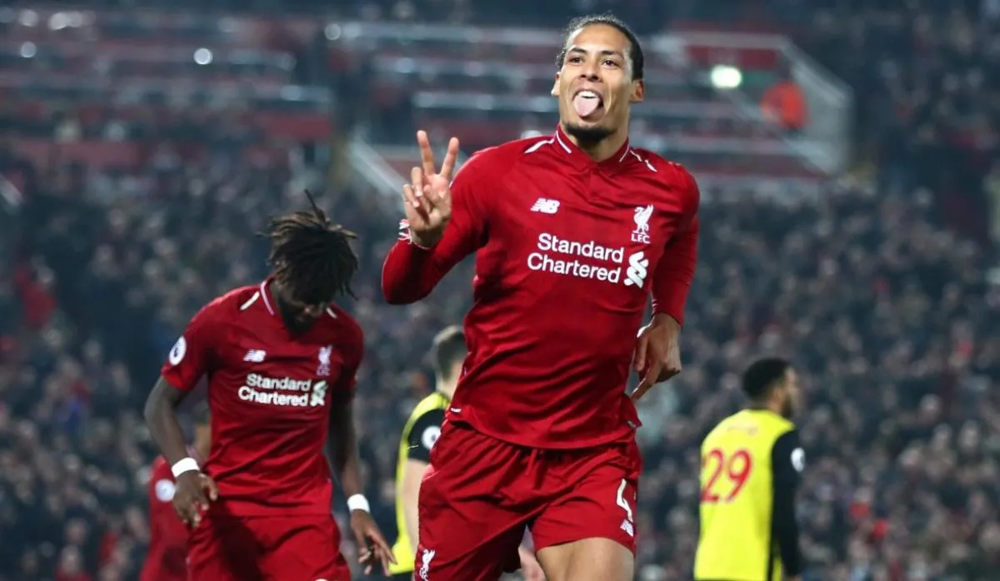

Defensa
Defensa Central
También denominado zaguero central, o simplemente central (no confundir con el término marcador central).
Habitualmente numerados como 4 y 5 (en Europa) o 2 y 6 (en Argentina); 3 y 4 (en Brasil); 2 y 3 (en Uruguay),
dependiendo de cada país, los marcadores centrales constituyen la base de la defensa. El zaguero central juega de
una forma más contenida que el mediocampista defensivo, de preferencia en línea de 4 esperando en orden el ataque rival
y resguardando el área con una defensa zonal —este jugador más bien espera al rival en la última línea—.
El zaguero central necesariamente no se encarga de las bandas, esa es tarea del mediocampista defensivo o del marcador de punta.
Su principal orientación no es salir a marcar jugadores, sino proteger las áreas en defensa zonal..
Defensa Corte
Mayormente conocido como marcador de corte también llamado estóper6
Juega preferentemente en línea de 3 o de 5, adelante de un líbero, en ocasiones se los puede ver en la línea de 4
complementando al marcador central ubicado en el centro-izquierdo de la defensa o en la punta de un rombo defensivo encargado
en primera instancia de desbaratar el ataque del rival. En esa posibilidad de alineación destacan en la formación 4-4-2
cuando se juega sin un mediocampista defensivo nominal. También son importantes en el fútbol sudamericano cuando se privilegia
suprimir al volante de contención y para jugar con volantes de salida, entonces el estóper se vuelve indispensable por delante
de la defensa en un rombo defensivo. Tradicionalmente usan los números 3 o 2.
Explicación Defensa

¿A nivel general, que principales aspectos valoraremos en un Defensa?
- Por lo general los defensores centrales son más altos que los laterales
- Se debe mirar al balón y a los pies del rival para anticipar sus movimientos
- Cuando no se puede detener al rival, se puede extender los brazos para restarle velocidad,
con esta acción no se comete falta como si se haría si se dan codazos o empujones. - Recuperación: Se puede recuperar el balón de frente o deslizante
¿Que pueden hacer los Defensas?
Un buen defensa tiene que ser capaz de ganar los balones por alto para despejarlos y evitar así claras situaciones de gol.
Además, por norma general los centrales suelen ser pieza básica en el ataque a balón parado, rematando faltas o corners.
¿como ser un buen Central de Futbol?
En tu calidad de defensa en el fútbol, tu principal función es evitar que el otro equipo anote un gol.
Sin embargo, los buenos defensas van mucho más allá de esto, ya que deben brindarles información esencial
a sus compañeros en el campo y presionar a sus oponentes para que cometan errores mediante los cuales los defensas tengan la oportunidad de despejar el balón y deshacerse de la amenaza.
Asimismo, deben apoyar a sus compañeros de equipo y cubrirlos para permitirles encontrar oportunidades de anotar. Para ser un buen defensa,
necesitas habilidades técnicas sólidas, resistencia mental y buena forma física
Es fundamental que los defensas tengan un centro de gravedad bajo, para lo cual debes flexionar las rodillas y tensar los músculos del torso con los brazos hacia afuera a los costados. Cuando los jugadores del otro equipo se te acerquen, puedes apartar sus brazos.[2] Mantente en puntas de pie separando los pies a alrededor de la distancia entre tus hombros de forma que tengas un mejor equilibrio y puedas bloquear una mayor cantidad de espacio. Mantén los ojos fijos en el balón y no en el jugador contra el cual te estés defendiendo. Cuando no tengas el balón, debes darle un vistazo al campo de forma que sepas cuál es la ubicación de todos los jugadores y te sea posible anticipar oportunidades que el equipo contrario podría querer aprovechar.
Defensas
son algunos ejemplos de como trabaja un Defensa:
Defensa